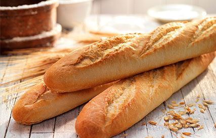
Pão brancoÉ talvez o mais conhecido e mais comum. Este tipo de pão inclui pão de pão, pão artesanal ou rústico, baguete... É apetitoso, saudável e muito nutritivo. Composto por trigo, é perfeito para toda a população. Um pão que nunca pode ser deixado numa casa. |
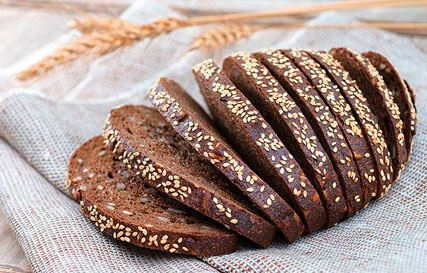
Pão de centeioÉ mais compacto do que o trigo porque os cereais de centeio contêm menos glúten. glúten. É de cor escura, com um sabor relativamente amargo e uma textura menos esponjosa. Tem menos proteínas e gordura, mas mais hidratos de carbono e fibras do que o trigo. |
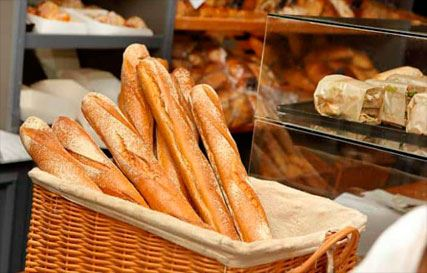
BagueteTambém chamado pão francês, flauta ou bobbin. Uma baguete ou baguete é uma variedade de pão que é é caracterizada pela sua utilização de farinha de trigo, por ser muito mais comprida do que é larga e pela sua crosta estaladiça. crosta. É ideal para fazer sanduíches. |
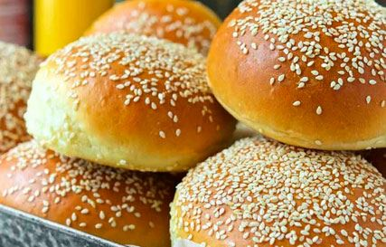
Pão de hambúrguerEste pão tem geralmente forma redonda e é feito em pães individuais. É essencialmente uma variedade de pão fatiado e partilha a sua textura e sabor. A sua consistência suave torna-o particularmente adequado para pessoas com problemas de mastigação. Há também uma variedade mais doce, o brioche. variedade doce, brioche. |
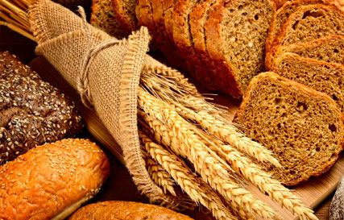
Pan integralElaborado con harinas integrales, es más rico en vitaminas, minerales y fibra que el pan blanco, ya que se emplea harina producida a partir del grano de cereal completo. Contiene vitaminas del grupo B, muy buenas para el sistema nervioso, minerales como el fósforo, calcio, magnesio y potasio. |
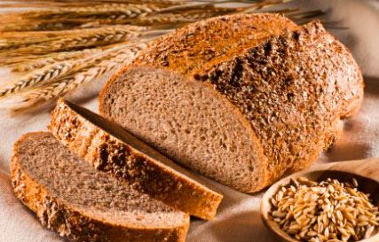
Pão com FareloDiferente do pão integral. O pão com farelo é feito com farinha refinada à qual são adicionados fragmentos de farelo, sendo por isso ainda um tipo de pão branco, mas com um teor de fibra mais elevado e a mesma quantidade de nutrientes. É ideal para pessoas com obstipação ligeira a moderada e para pessoas com obstipação moderada e que não gostam de pão integral. |
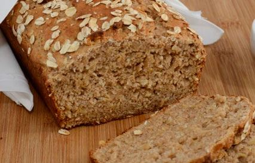
Pão de AveiaPão muito nutritivo e energético, rico em proteínas, vitaminas B e minerais, especialmente magnésio. É recomendado para estados depressivos, convalescentes, e anémicos e em casos de retenção de fluidos devido ao seu efeito diurético. |
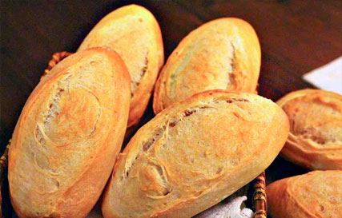
BoliloFeito com farinha de trigo, muito esponjoso, imitando o pão que eles fazem em França. No México, este tipo de O tipo de pão é conhecido como bolillo, com controvérsia sobre o que é conhecido como birote. Muito recomendado para o pequeno-almoço. |
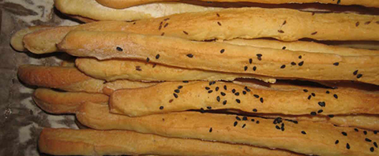
Pão de cachimbosCaracterizado pelo seu miolo suculento e pelo sabor das sementes de girassol. Quando consumido, a consistência dada pelas sementes na crosta e no interior pode ser apreciada. Pode ser comido por si só ou com com qualquer qualquer prato, especialmente peixe e peixe fumado. |
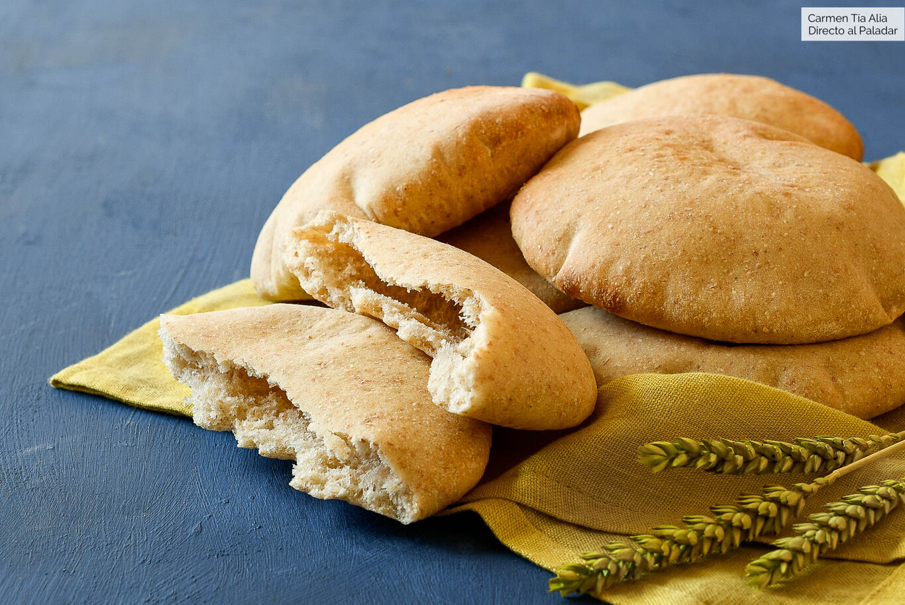
Pão PitaUm tipo de pão achatado macio, ligeiramente fermentado feito de farinha de trigo, comido na zona mediterrânica, especialmente no Próximo Oriente, ocasionalmente cozido em paredes de forno e que lembra a crosta de pizza. |
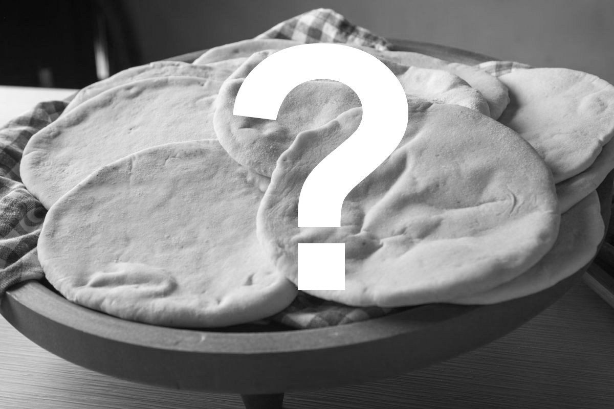
Em breveEm breve traremos um pão que lambe os dedos, muito suculento e muito tenro ao mesmo tempo, com certeza que vai adorar! E o texto é demasiado pequeno para o deixar assim, por isso apreciem a minha prosa! Oh sim, será feito em casa, não há necessidade de o comprar... |
Em breveEm breve traremos um pão que lambe os dedos, muito suculento e muito tenro ao mesmo tempo, com certeza que vai adorar! E o texto é demasiado pequeno para o deixar assim, por isso apreciem a minha prosa! Oh sim, será feito em casa, não há necessidade de o comprar... |